influx_si tutorial
JS MetaboHub 15-17/10/2025
This tutorial support can be found at https://mathscell.github.io/form/mth/

Introduction to influx_si
influx_si can be used to estimate metabolic fluxes and concentrations in metabolically stationary mode using two different labeling regimes:
- stationary labeling =>
influx_s - instationary labeling =>
influx_iThe terminflux_siis used when a affirmation applies to both regimes.
The goals of this tutorial
We’ll try to:
- create a calculation case for
influx_iab initio for a simple metabolic network; - simulate measurement data;
- and estimate fluxes and concentrations.
Prerequisites
Conda installation
If not yet done, install miniconda from download page E.g. on windows you can do:
$ curl https://repo.anaconda.com/miniconda/Miniconda3-latest-Windows-x86_64.exe -o .\miniconda.exe
$ start /wait "" .\miniconda.exe /S
$ del .\miniconda.exeNow we configure our conda installation by removing the channel defaults and adding bioconda and conda-forge.
conda config --remove channels defaults
conda config --add channels bioconda
conda config --add channels conda-forge
# check the result
conda config --show channelsinflux_si installation
Open “Anaconda promt” from Windows menu.
In conda terminal, create new environment for this tutorial
$ conda create -n tuto influx_si
$ conda activate tutoYous should see (tuto) in a prompt now. Let check influx_si’s version:
$ influx_s --vShould show 7.4.1. If not, run:
$ conda install influx_si=7.4.1Let further check if R libraries can be loaded without problem:
R -e "library(arrApply)"should execute without error.
⚠️ If failed, you can try in conda:
influx_s --install_rdep
# re-check installation
R -e "library(arrApply)"Network to simulate

Metabolites A and B are the internal metabolites, A_in is the input, B_out is the output metabolites. They are not participating in balance equations as they can be consumed/accumulated. Only internal metabolites are considered as stationary and participate in mass and label balance. The reaction r_1 is a reversible reaction between A and B. It means that the exchange flux r_1.xch can be non 0. Reactions r_in and r_out are the input and output reactions, respectively. The fluxes of these reactions are not reversible, i.e. their exchange fluxes are 0. This is mandatory. Otherwise, a terminal internal metabolite would be considered as “dead-end”, i.e. the net flux is 0 but the exchange flux is not.
Creating first file tuto.netw
Create a directory tuto where all our work (input files and results) will reside:
$ mkdir tuto
$ cd tutoinflux_si relies on MTF (Multiple TSV Files) input format. It includes several files, each providing a particular type of information. The central one – the network file with extension .netw.
Edit file tuto.netw in Notepad++ or alike editor to have the following content:
r_in: A_in (a) -> A (a)
r_1: A (a) <-> B (a)
r_out: B (a) -> B_out (a)Note that the separator between reaction name and its content “:” can be replaced by an invisible tabulation character that we note later as <tab>.
Our network with carbon transitions is ready! Let try to use it:
$ influx_i --pref tutoIt ends up in error but at this stage it is normal: we are lacking many things for a working example :
input labeling configuration (
.linpfile) -> we have to edit it;measured isotopic data (
.miso) -> we have to collect (here simulate) data;possibly measured input/output fluxes (
.mflux) -> here, not used;possibly measured metabolite concentrations
(.mmet) -> here, not used;possibly fine tuning of tarting point and flux/metabolite types (
.tvar) -> here, we’ll change a starting value of a free flux.possible constraints on fluxes and metabolite concentrations (
.cnstr) -> here, not usedand finally, a file with different options to configure optimization/simulation processes (
.opt) -> here, we’ll set up different options.
But first of all, let visually check if our .netw file corresponds to our intentions:
$ ftbl2html --pref tutoOpen tuto.html in a browser.
It should look like a previous diagram. But in real life, there may be some problems:
syntax errors;
different omissions or typos, errors in reaction types (reversible/not reversible);
metabolite type (output/dead-end)…
Check error messages and network diagram to correct possible problems.
Prepare other MTF files
Copy tuto.linp.def to tuto.linp. By default, all input metabolites are configured to be fully labeled. Let leave it as is for this tutorial.
Edit .miso file to indicate what are metabolites that will be measured for isotopic data (each column is separated by a <tab> character):
| Specie | Fragment | Dataset | Isospecies | Value | SD | Time |
|---|---|---|---|---|---|---|
| A | MS-A | M0 | NA | 0.002 | ||
| A | MS-A | M1 | NA | 0.002 | ||
| B | MS-B | M0 | NA | 0.002 | ||
| B | MS-B | M1 | NA | 0.002 |
Text editor can be a sub-optimal tool for checking a good column alignment. You can use an HTML page http://mathscell.github.io/vtsv.html to check it (drag&drop works with this page).
Let edit tuto.opt to tell influx_i:
to run a simulation from time 0 to 10 with 5 time points (which will correspond to sample collection in a real experiment) (
tmax=10, dt=2)but subdivide each time interval into 4 sub-intervals for smoother curve simulation (
nsubdiv_dt=4)moreover, we want just a simulation (not flux estimations; i.e. no optimization) (
--noopt)with a second order of approximation error (
--time_order=2)generate PDF with simulated labeling dynamics (
posttreat_R=plot_ilab.R)as the simulation will be used later as a substitute for measured data, we ask to add artificial noise to get more realistic in submitted data during flux estimations. (
--addnoise --seed 777)
It gives:
| Name | Value |
|---|---|
tmax |
10 |
dt |
2 |
nsubdiv_dt |
4 |
commandArgs |
--noscale --time_order=2 --noopt --addnoise --seed 777 |
posttreat_R |
plot_ilab.R |
Running first simulation
Now, influx_i should run without errors:
influx_i --pref tutoLet see the plots in tuto_res/tmp/tuto.pdf file. The curve should be increasing for M1 and decreasing for M0. They should be sharper for A metabolite as it is closer to the entry than B.
Using simulated data as measurements
Backup tuto.miso in tuto.miso.save and copy tuto_res/tuto.miso.sim to tuto.miso.
Now, rerunning influx_i produce PDF with simulated (smooth lines) and “measured” (dots with broken lines) data. They are perfectly aligned because we have used for starting point the same flux and metabolite values as for measurement simulation. Let change the starting point 0.2 for r_out in .tvar file by 0.1 (first, rename tuto.tvar.def to tuto.tvar):
r_in NET F 0.2 -> r_in NET F 0.1After running influx_i, in the PDF, we can see a significant difference between simulated and measured data. It makes sens now to run flux estimation by suppressing --noopt, --addnoise and --seed 777 in tuto.opt file.
Running influx_i again and taking a look at tuto_res/tuto.log, we can see that flux estimation was done in 5 iterations (may slightly vary in your experiments):
<snip>
Starting point
it=0 res=246.4894
it=1 res=83.26919 normstep=0.0558698 btk=1
it=2 res=18.52647 normstep=0.03685367 btk=1
it=3 res=3.472284 normstep=0.01673964 btk=1
it=4 res=3.323951 normstep=0.001436949 btk=1
it=5 res=3.323951 normstep=8.648842e-07 btk=1
<snip>But are estimated values we obtained are correct? Coinciding simulated and measured curves suggest that yes. To be sure, we can examine tuto_res/tuto.tvar.sim to see that estimated value of r_in net flux is indeed very close to 0.2, the value used in producing simulated data.
Using several random starting points
In real experiments, with complex networks, it can be helpful to rerun influx_si from different starting points and then select the solution reaching lowest cost value. It can be done using options --irand (use random starting point) and --iseries 1:10 (use ten staring points). We add them to commandArgs in tuto.opt file:
commandArgs |
--noscale --time_order=2 --irand --iseries 1:10 --seed 777 |
In tuto_res/tuto.log we can see how fitting was going for all 10 starting points:
<snip>
Starting point.V01
it=0 res=74.58354
it=1 res=71.92712 normstep=7.216406 btk=1
it=2 res=71.9265 normstep=137091.5 btk=6.169703e-05
it=3 res=71.92648 normstep=9072013 btk=9.323334e-07
it=4 res=71.92648 normstep=105189208 btk=9.323334e-07
it=5 res=71.92648 normstep=105189208 btk=9.323334e-07
it=6 res=71.92648 normstep=105189208 btk=9.323334e-07
it=7 res=71.92648 normstep=105189208 btk=9.323334e-07
it=8 res=71.92648 normstep=105189208 btk=9.323334e-07
it=9 res=71.92648 normstep=105189208 btk=9.323334e-07
it=10 res=71.92648 normstep=105189208 btk=9.323334e-07
it=20 res=71.92648 normstep=105189208 btk=9.323334e-07
it=30 res=71.92648 normstep=105189208 btk=9.323334e-07
it=40 res=71.92648 normstep=105189208 btk=9.323334e-07
it=50 res=71.92648 normstep=105189208 btk=9.323334e-07
***Warning: in first optimization pass in run .V01: nlsic: Maximal non linear iteration number is achieved
Starting point.V02
it=0 res=48.7548
it=1 res=27.55996 normstep=1.002227 btk=1
it=2 res=7.590552 normstep=0.03334867 btk=1
it=3 res=3.328606 normstep=0.006372948 btk=1
it=4 res=3.323951 normstep=0.0002465743 btk=1
it=5 res=3.323951 normstep=2.736581e-07 btk=1
<snip>Some initial points lead to convergence to the true solution and some others have exhausted the iteration limit (which can be increased, by the way) without reaching a convergence point.
Conclusion
We have build a simple ab initio network and get to a correct flux estimation. This should facilitate mastering influx_si by novice users. More influx_si features can be found in its documentation https://influx-si.readthedocs.io/